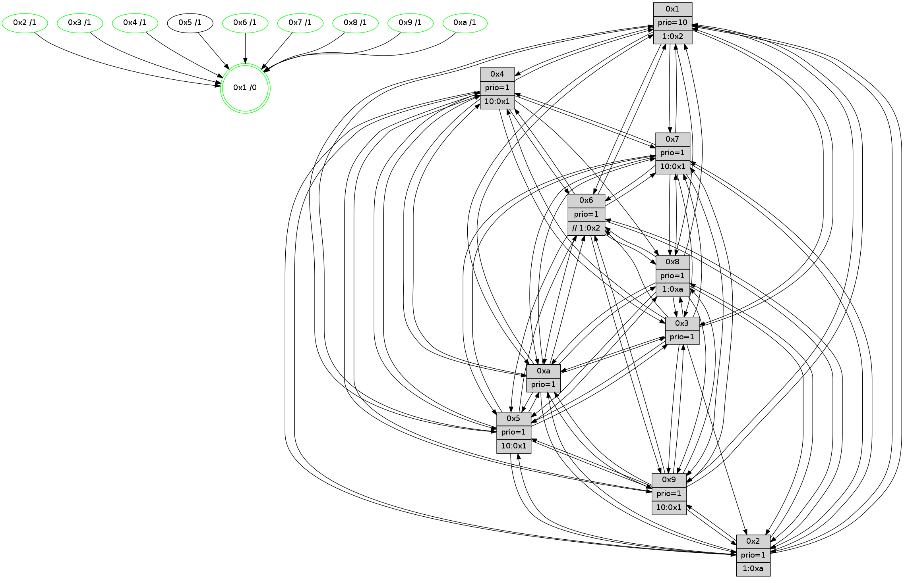

>> << IDX [start] -100 -25 -5 +0 +5 +25 +100 [1365.47143507]
 Previous packets
1360.004500 beacon06(faad) #0 coord=01,02,03,04,05,06,07,0a,09,08 cycle=688.0ms assoc 64 a5 e3
1360.014501 beacon07(faad) #0 coord=01,02,03,04,05,06,07,0a,09,08 cycle=688.0ms assoc 64 df ae
1360.024505 beacon0a(faad) #0 coord=01,02,03,04,05,06,07,0a,09,08 cycle=688.0ms assoc 64 ae a5
1360.044504 beacon08(faad) #0 coord=01,02,03,04,05,06,07,0a,09,08 cycle=688.0ms assoc 64 5a 3f
1360.056051 [Hello(10): seq=800 sym=6,2,3,8,7,5,9,4,1 sysInfo=hasWarning stat=6:13,7,14,3/2:13,1,2,0/3:0,14,3,14/8:12,12,13,3/7:0,0,10,9/5:2,15,11,0/9:7,11,1,0/4:8,12,7,1/1:14,1,9,1]
1360.059904 [Hello(4): seq=867 sym=5,8,6,2,3,9,7,10,1 sysInfo= stat=5:5,12,3,1/8:3,8,0,0/6:0,3,11,14/2:8,15,3,0/3:14,14,12,14/9:11,6,12,1/7:2,3,0,0/10:7,3,15,14/1:8,10,14,1]
1360.062783 [Color(1) seq=547 @0:0 prio=10 >1.@2,1.@3,1.@4,1.@5]
1360.064810 [Hello(8): seq=811 sym=5,2,3,7,9,6,4,10,1 sysInfo=hasWarning stat=5:6,15,4,0/2:15,9,9,12/3:8,12,13,3/7:5,13,1,1/9:4,6,6,4/6:12,10,11,15/4:9,1,2,0/10:12,15,11,5/1:13,0,15,0]
1360.067337 [Color(4) seq=406 @0:0 prio=1 >10.@1,1.@2,1.@3,1.@5]
1360.069759 [Hello(9): seq=811 sym=2,5,3,4,7,6,8,10,1 sysInfo=hasWarning stat=2:0,14,12,10/5:4,4,15,7/3:1,3,5,3/4:3,10,0,1/7:4,1,5,4/6:15,5,11,13/8:2,0,1,5/10:7,7,3,5/1:3,5,1,1]
1360.073305 [Hello(7): seq=867 sym=2,3,5,6,4,8,9,10,1 sysInfo=hasWarning stat=2:2,1,1,3/3:11,7,4,3/5:8,0,8,2/6:4,1,2,11/4:10,3,3,0/8:2,9,8,0/9:12,14,7,1/10:1,8,13,7/1:2,4,12,0]
1360.075732 [Color(8) seq=466 @0:0 prio=1 >1.@a]
1360.077289 [Color(7) seq=395 @0:0 prio=1 >10.@1,1.@5,1.@6,1.@8]
----------------------------------------------------------------------
1360.742646 beacon01(faad) #0 coord=01,02,03,04,05,06,07,0a,09,08 cycle=688.0ms assoc
-- color-indic=1 64 db 81
1360.752630 beacon02(faad) #0 coord=01,02,03,04,05,06,07,0a,09,08 cycle=688.0ms assoc 64 48 b0
1360.762628 beacon03(faad) #0 coord=01,02,03,04,05,06,07,0a,09,08 cycle=688.0ms assoc 64 32 fd
1360.772629 beacon04(faad) #0 coord=01,02,03,04,05,06,07,0a,09,08 cycle=688.0ms assoc 64 45 17
1360.782628 beacon05(faad) #0 coord=01,02,03,04,05,06,07,0a,09,08 cycle=688.0ms assoc 64 3f 5a
1360.792630 beacon06(faad) #0 coord=01,02,03,04,05,06,07,0a,09,08 cycle=688.0ms assoc 64 b1 8d
1360.802631 beacon07(faad) #0 coord=01,02,03,04,05,06,07,0a,09,08 cycle=688.0ms assoc 64 cb c0
1360.812633 beacon0a(faad) #0 coord=01,02,03,04,05,06,07,0a,09,08 cycle=688.0ms assoc 64 ba cb
1360.832636 beacon08(faad) #0 coord=01,02,03,04,05,06,07,0a,09,08 cycle=688.0ms assoc 64 4e 51
1360.844110 [Hello(5): seq=868 sym=7,6,4,3,1,9,8,10,2 sysInfo=hasWarning stat=7:15,3,11,0/6:4,8,10,4/4:4,9,0,14/3:9,1,5,1/1:2,4,1,0/9:0,15,13,10/8:0,2,14,4/10:0,15,14,9/2:7,15,5,7]
1360.847191 [Hello(1): seq=777 sym=4,2,9,5,10,3,8,6,7 sysInfo=coloring-mode-on,ColoringModeRequestCalled stat=4:7,0,3,2/2:5,6,12,5/9:2,13,1,1/5:11,7,2,8/10:2,12,15,8/3:5,15,14,10/8:4,8,14,2/6:9,12,14,0/7:5,10,6,1]
1360.849622 [Color(10) seq=457 @0:0 prio=1]
1360.851511 [Hello(2): seq=864 sym=4,5,7,9,8,10,1 asym=6 sysInfo=hasWarning stat=4:4,11,2,12/5:9,0,11,2/7:1,9,3,1/9:9,2,5,9/8:10,10,14,12/10:4,12,0,11/1:7,14,10,0/6:2,6,2,0]
1360.854520 [Hello(3): seq=868 sym=1,7,6,2,4,8,9,10,5 sysInfo=hasWarning stat=1:10,4,1,0/7:10,9,5,14/6:3,6,2,0/2:11,4,14,2/4:1,3,8,12/8:0,8,15,5/9:0,15,8,0/10:0,12,11,5/5:15,7,10,0]
1360.857302 [Color(2) seq=444 @0:0 prio=1 >1.@a]
1360.862273 [Color(3) seq=497 @0:0 prio=1]
1360.863758 [Hello(6): seq=868 sym=2,5,4,7,9,8,10,1 sysInfo=hasWarning stat=2:0,2,0,0/5:5,11,2,3/4:13,12,5,7/7:14,10,15,15/9:6,2,12,10/8:10,1,8,6/10:10,8,2,13/1:3,15,14,1]
1360.867166 [STC(1) #0.230 tree-change,inconsistent-stability,stable,to-color d=0]
1360.868462 [Color(9) seq=427 @0:0 prio=1 >10.@1,1.@5,1.@a]
1360.871084 [Color(6) seq=500 @0:0 prio=1 >>1.@2,1.@3,1.@4]
----------------------------------------------------------------------
1361.530776 beacon01(faad) #0 coord=01,02,03,04,05,06,07,0a,09,08 cycle=688.0ms assoc
-- color-indic=1 64 67 84
1361.540758 beacon02(faad) #0 coord=01,02,03,04,05,06,07,0a,09,08 cycle=688.0ms assoc 64 f4 b5
1361.550757 beacon03(faad) #0 coord=01,02,03,04,05,06,07,0a,09,08 cycle=688.0ms assoc 64 8e f8
1361.560759 beacon04(faad) #0 coord=01,02,03,04,05,06,07,0a,09,08 cycle=688.0ms assoc 64 f9 12
1361.570758 beacon05(faad) #0 coord=01,02,03,04,05,06,07,0a,09,08 cycle=688.0ms assoc 64 83 5f
1361.580759 beacon06(faad) #0 coord=01,02,03,04,05,06,07,0a,09,08 cycle=688.0ms assoc 64 0d 88
1361.590759 beacon07(faad) #0 coord=01,02,03,04,05,06,07,0a,09,08 cycle=688.0ms assoc 64 77 c5
1361.600765 beacon0a(faad) #0 coord=01,02,03,04,05,06,07,0a,09,08 cycle=688.0ms assoc 64 06 ce
1361.620764 beacon08(faad) #0 coord=01,02,03,04,05,06,07,0a,09,08 cycle=688.0ms assoc 64 f2 54
1361.632031 [STC(3)->1 #0.230 tree-change,inconsistent-stability,stable,to-color d=1]
1361.633599 [STC(5)->1 #0.230 tree-change,inconsistent-stability,to-color d=1]
1361.635730 [TreeStatus(3)-.->1 #0.230 tree-change,inconsistent-stability,stable child=1]
1361.637741 [Color(1) seq=548 @0:0 prio=10 >1.@2,1.@3,1.@4,1.@5]
1361.639411 [Hello(8): seq=812 sym=5,2,3,7,9,6,10,1 sysInfo=hasWarning stat=5:7,15,4,0/2:0,10,9,12/3:9,13,13,3/7:5,14,1,1/9:4,7,6,4/6:13,11,11,15/10:13,15,11,5/1:14,0,0,0]
1361.641935 [Hello(10): seq=801 sym=6,2,3,8,7,5,9,4,1 sysInfo=hasWarning stat=6:14,8,14,3/2:14,2,2,0/3:1,15,3,14/8:13,12,13,3/7:1,1,10,9/5:3,15,11,0/9:8,12,1,0/4:9,13,7,1/1:14,2,10,1]
1361.644605 [STC(2)->1 #0.230 tree-change,inconsistent-stability,stable,to-color d=1]
1361.646078 [STC(8)->1 #0.230 tree-change,inconsistent-stability,stable,to-color d=1]
1361.648515 [Hello(4): seq=868 sym=5,8,6,2,3,9,7,10,1 sysInfo= stat=5:6,12,3,1/8:3,8,0,0/6:1,4,11,14/2:9,0,3,0/3:15,15,12,14/9:12,7,12,1/7:3,4,0,0/10:8,3,15,14/1:9,10,15,1]
1361.651084 [STC(10)->1 #0.230 tree-change,inconsistent-stability,stable,to-color d=1]
1361.652732 [Hello(9): seq=812 sym=2,5,3,4,7,6,8,10,1 sysInfo=hasWarning stat=2:0,14,12,10/5:5,4,15,7/3:1,3,5,3/4:3,10,0,1/7:5,2,5,4/6:15,6,11,13/8:2,0,1,5/10:7,7,3,5/1:3,5,1,1]
1361.656570 [STC(4)->1 #0.230 tree-change,inconsistent-stability,stable,to-color d=1]
1361.659803 [Color(4) seq=407 @0:0 prio=1 >10.@1,1.@2,1.@3,1.@5]
1361.662179 [Color(8) seq=467 @0:0 prio=1 >1.@a]
1361.669050 [Hello(7): seq=868 sym=2,3,5,6,4,8,9,10,1 sysInfo=hasWarning stat=2:3,2,1,3/3:12,8,4,3/5:9,0,8,2/6:5,2,2,11/4:10,3,3,0/8:2,10,8,0/9:12,15,7,1/10:2,8,13,7/1:3,4,13,0]
1361.672524 [STC(7)->1 #0.230 tree-change,inconsistent-stability,stable,to-color d=1]
1361.676398 [Color(7) seq=396 @0:0 prio=1 >10.@1,1.@5,1.@6,1.@8]
----------------------------------------------------------------------
1362.318908 beacon01(faad) #0 coord=01,02,03,04,05,06,07,0a,09,08 cycle=688.0ms assoc
-- color-indic=1 64 a3 8a
1362.328889 beacon02(faad) #0 coord=01,02,03,04,05,06,07,0a,09,08 cycle=688.0ms assoc 64 30 bb
1362.338890 beacon03(faad) #0 coord=01,02,03,04,05,06,07,0a,09,08 cycle=688.0ms assoc 64 4a f6
1362.348890 beacon04(faad) #0 coord=01,02,03,04,05,06,07,0a,09,08 cycle=688.0ms assoc 64 3d 1c
1362.358892 beacon05(faad) #0 coord=01,02,03,04,05,06,07,0a,09,08 cycle=688.0ms assoc 64 47 51
1362.368892 beacon06(faad) #0 coord=01,02,03,04,05,06,07,0a,09,08 cycle=688.0ms assoc 64 c9 86
1362.378891 beacon07(faad) #0 coord=01,02,03,04,05,06,07,0a,09,08 cycle=688.0ms assoc 64 b3 cb
1362.388894 beacon0a(faad) #0 coord=01,02,03,04,05,06,07,0a,09,08 cycle=688.0ms assoc 64 c2 c0
1362.408898 beacon08(faad) #0 coord=01,02,03,04,05,06,07,0a,09,08 cycle=688.0ms assoc 64 36 5a
1362.421426 [Hello(1): seq=778 sym=4,2,9,5,10,3,8,6,7 sysInfo=coloring-mode-on,ColoringModeRequestCalled stat=4:8,1,4,2/2:5,6,13,5/9:3,14,1,1/5:11,7,3,8/10:3,13,0,8/3:5,15,15,10/8:5,9,15,2/6:9,13,14,0/7:6,11,7,1]
1362.424458 [Color(9) seq=428 @0:0 prio=1 >10.@1,1.@5,1.@a]
1362.426068 [Color(10) seq=458 @0:0 prio=1]
1362.427620 [Hello(3): seq=869 sym=1,7,6,2,4,8,9,10,5 sysInfo=hasWarning stat=1:11,5,2,0/7:11,10,6,14/6:4,7,2,0/2:11,4,15,2/4:2,4,9,12/8:1,9,0,5/9:1,0,8,0/10:1,12,12,5/5:0,7,10,0]
1362.431725 [Color(3) seq=498 @0:0 prio=1]
1362.433759 [Hello(6): seq=869 sym=2,5,4,7,9,8,10,1 sysInfo=hasWarning stat=2:0,2,1,0/5:6,11,3,3/4:14,13,6,7/7:15,11,0,15/9:7,2,12,10/8:11,2,9,6/10:11,8,3,13/1:4,0,14,1]
1362.437103 [Color(6) seq=501 @0:0 prio=1 >>1.@2,1.@3,1.@4]
1362.444268 [Hello(5): seq=869 sym=7,6,4,3,1,9,8,10,2 sysInfo=hasWarning stat=7:0,4,12,0/6:5,9,10,4/4:5,10,1,14/3:10,2,5,2/1:3,5,2,0/9:1,0,13,10/8:1,3,15,4/10:1,15,15,9/2:8,0,6,7]
1362.447146 [Hello(2): seq=865 sym=4,5,7,6,9,8,10,1 sysInfo=hasWarning stat=4:5,12,3,12/5:10,0,11,2/7:2,10,4,1/6:3,7,2,0/9:10,3,5,9/8:10,11,15,12/10:4,12,1,11/1:8,14,11,0]
1362.450799 [Color(2) seq=445 @0:0 prio=1 >1.@a]
----------------------------------------------------------------------
1363.107041 beacon01(faad) #0 coord=01,02,03,04,05,06,07,0a,09,08 cycle=688.0ms assoc
-- color-indic=1 64 1f 8f
1363.117023 beacon02(faad) #0 coord=01,02,03,04,05,06,07,0a,09,08 cycle=688.0ms assoc 64 8c be
1363.127023 beacon03(faad) #0 coord=01,02,03,04,05,06,07,0a,09,08 cycle=688.0ms assoc 64 f6 f3
1363.137024 beacon04(faad) #0 coord=01,02,03,04,05,06,07,0a,09,08 cycle=688.0ms assoc 64 81 19
1363.147024 beacon05(faad) #0 coord=01,02,03,04,05,06,07,0a,09,08 cycle=688.0ms assoc 64 fb 54
1363.157022 beacon06(faad) #0 coord=01,02,03,04,05,06,07,0a,09,08 cycle=688.0ms assoc 64 75 83
1363.167025 beacon07(faad) #0 coord=01,02,03,04,05,06,07,0a,09,08 cycle=688.0ms assoc 64 0f ce
1363.177028 beacon0a(faad) #0 coord=01,02,03,04,05,06,07,0a,09,08 cycle=688.0ms assoc 64 7e c5
1363.197028 beacon08(faad) #0 coord=01,02,03,04,05,06,07,0a,09,08 cycle=688.0ms assoc 64 8a 5f
1363.209207 [Hello(10): seq=802 sym=6,2,3,8,7,5,9,4,1 sysInfo=hasWarning stat=6:15,9,14,3/2:15,3,2,0/3:2,0,3,14/8:13,13,13,3/7:2,2,11,9/5:4,15,11,0/9:9,12,1,0/4:9,14,8,1/1:15,2,10,1]
1363.211894 [Hello(9): seq=813 sym=2,5,3,4,7,6,8,10,1 sysInfo=hasWarning stat=2:1,15,12,10/5:6,4,15,7/3:2,4,5,3/4:3,11,1,1/7:6,3,6,4/6:0,7,11,13/8:2,1,1,5/10:7,8,3,5/1:4,5,1,1]
1363.215762 [Hello(4): seq=869 sym=5,8,6,2,3,9,7,10,1 sysInfo= stat=5:7,12,4,1/8:3,9,0,0/6:2,5,11,14/2:10,1,3,0/3:0,0,13,15/9:12,8,12,1/7:4,5,1,0/10:8,4,15,14/1:10,10,15,1]
1363.218199 [Hello(7): seq=869 sym=2,3,5,6,4,8,9,10,1 sysInfo=hasWarning stat=2:4,3,1,3/3:13,9,5,3/5:10,0,9,2/6:6,3,2,11/4:10,3,3,0/8:2,10,8,0/9:12,0,7,1/10:2,9,13,7/1:4,4,13,0]
1363.223164 [Color(4) seq=408 @0:0 prio=1 >10.@1,1.@2,1.@3,1.@5]
1363.227498 [Color(1) seq=549 @0:0 prio=10 >1.@2,1.@3,1.@4,1.@5]
1363.230444 [Hello(8): seq=813 sym=5,2,3,7,9,6,10,1 sysInfo=hasWarning stat=5:8,15,5,0/2:1,11,9,12/3:10,14,14,4/7:6,15,2,1/9:4,8,6,4/6:14,12,11,15/10:13,0,11,5/1:15,0,0,0]
1363.233452 [Color(7) seq=397 @0:0 prio=1 >10.@1,1.@5,1.@6,1.@8]
----------------------------------------------------------------------
1363.895171 beacon01(faad) #0 coord=01,02,03,04,05,06,07,0a,09,08 cycle=688.0ms assoc
-- color-indic=1 64 2b 97
1363.905154 beacon02(faad) #0 coord=01,02,03,04,05,06,07,0a,09,08 cycle=688.0ms assoc 64 b8 a6
1363.915152 beacon03(faad) #0 coord=01,02,03,04,05,06,07,0a,09,08 cycle=688.0ms assoc 64 c2 eb
1363.925156 beacon04(faad) #0 coord=01,02,03,04,05,06,07,0a,09,08 cycle=688.0ms assoc 64 b5 01
1363.935154 beacon05(faad) #0 coord=01,02,03,04,05,06,07,0a,09,08 cycle=688.0ms assoc 64 cf 4c
1363.945153 beacon06(faad) #0 coord=01,02,03,04,05,06,07,0a,09,08 cycle=688.0ms assoc 64 41 9b
1363.955155 beacon07(faad) #0 coord=01,02,03,04,05,06,07,0a,09,08 cycle=688.0ms assoc 64 3b d6
1363.965159 beacon0a(faad) #0 coord=01,02,03,04,05,06,07,0a,09,08 cycle=688.0ms assoc 64 4a dd
1363.985160 beacon08(faad) #0 coord=01,02,03,04,05,06,07,0a,09,08 cycle=688.0ms assoc 64 be 47
1363.996727 [Hello(1): seq=779 sym=4,2,9,5,10,3,8,6,7 sysInfo=coloring-mode-on,ColoringModeRequestCalled stat=4:8,1,4,2/2:6,7,13,5/9:3,15,1,1/5:12,7,3,8/10:4,14,0,8/3:6,0,15,10/8:6,9,15,2/6:10,14,14,0/7:6,12,7,1]
1364.000301 [Hello(5): seq=870 sym=7,6,4,3,1,9,8,10,2 sysInfo=hasWarning stat=7:0,4,12,0/6:5,9,10,4/4:6,11,1,14/3:10,2,5,2/1:3,6,2,0/9:2,0,13,10/8:2,4,15,4/10:2,15,15,9/2:9,1,6,7]
1364.004034 [Hello(2): seq=866 sym=4,5,7,6,9,8,10,1 sysInfo=hasWarning stat=4:6,13,3,12/5:10,0,11,2/7:2,11,4,1/6:3,7,2,0/9:11,3,5,9/8:11,11,15,12/10:5,12,1,11/1:9,15,11,0]
1364.007383 [Color(2) seq=446 @0:0 prio=1 >1.@a]
1364.011004 [Hello(6): seq=870 sym=2,5,4,7,9,8,10,1 sysInfo=hasWarning stat=2:1,3,1,0/5:7,11,3,3/4:15,14,6,7/7:15,12,0,15/9:8,2,12,10/8:12,2,9,6/10:12,8,3,13/1:5,1,14,1]
1364.014383 [Color(10) seq=459 @0:0 prio=1]
1364.023558 [Color(9) seq=429 @0:0 prio=1 >10.@1,1.@5,1.@a]
1364.025199 [Hello(3): seq=870 sym=1,7,6,2,4,8,9,10,5 sysInfo=hasWarning stat=1:12,6,2,0/7:11,10,6,14/6:5,8,2,0/2:12,5,15,2/4:3,5,9,12/8:2,9,0,5/9:2,0,8,0/10:2,12,12,5/5:1,7,10,0]
1364.030279 [Color(3) seq=499 @0:0 prio=1]
----------------------------------------------------------------------
1364.683304 beacon01(faad) #0 coord=01,02,03,04,05,06,07,0a,09,08 cycle=688.0ms assoc
-- color-indic=1 64 97 92
1364.693285 beacon02(faad) #0 coord=01,02,03,04,05,06,07,0a,09,08 cycle=688.0ms assoc 64 04 a3
1364.703286 beacon03(faad) #0 coord=01,02,03,04,05,06,07,0a,09,08 cycle=688.0ms assoc 64 7e ee
1364.713287 beacon04(faad) #0 coord=01,02,03,04,05,06,07,0a,09,08 cycle=688.0ms assoc 64 09 04
1364.723287 beacon05(faad) #0 coord=01,02,03,04,05,06,07,0a,09,08 cycle=688.0ms assoc 64 73 49
1364.733288 beacon06(faad) #0 coord=01,02,03,04,05,06,07,0a,09,08 cycle=688.0ms assoc 64 fd 9e
1364.743287 beacon07(faad) #0 coord=01,02,03,04,05,06,07,0a,09,08 cycle=688.0ms assoc 64 87 d3
1364.753291 beacon0a(faad) #0 coord=01,02,03,04,05,06,07,0a,09,08 cycle=688.0ms assoc 64 f6 d8
1364.773292 beacon08(faad) #0 coord=01,02,03,04,05,06,07,0a,09,08 cycle=688.0ms assoc 64 02 42
1364.786124 [Hello(10): seq=803 sym=6,2,3,8,7,5,9,4,1 sysInfo=hasWarning stat=6:15,9,14,3/2:15,3,2,0/3:3,1,3,14/8:14,13,13,3/7:2,3,11,9/5:4,15,11,0/9:10,13,1,0/4:10,15,8,1/1:0,3,10,1]
1364.788842 [STC(1) #0.231 tree-change,inconsistent-stability,stable,to-color d=0]
1364.790441 [Hello(7): seq=870 sym=2,3,5,6,4,8,9,10,1 sysInfo=hasWarning stat=2:5,4,1,3/3:14,10,5,3/5:11,0,9,2/6:7,4,2,11/4:10,3,3,0/8:2,10,8,0/9:12,1,7,1/10:3,9,13,7/1:5,4,13,0]
1364.793163 [Color(8) seq=469 @0:0 prio=1 >1.@a]
1364.795218 [Hello(4): seq=870 sym=5,8,6,2,3,9,7,10,1 sysInfo= stat=5:8,12,4,1/8:4,9,0,0/6:3,5,11,14/2:11,2,3,0/3:1,1,13,15/9:12,9,12,1/7:5,5,1,0/10:9,4,15,14/1:11,11,15,1]
1364.798644 [Color(7) seq=398 @0:0 prio=1 >10.@1,1.@5,1.@6,1.@8]
1364.800291 [Color(1) seq=550 @0:0 prio=10 >1.@2,1.@3,1.@4,1.@5]
1364.802664 [Color(4) seq=409 @0:0 prio=1 >10.@1,1.@2,1.@3,1.@5]